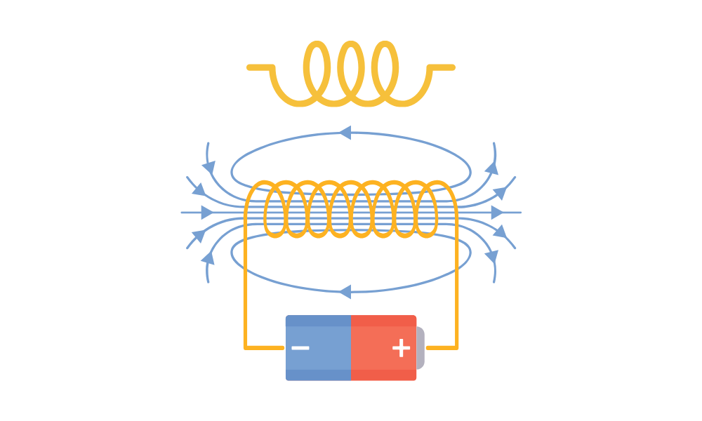

MODULE 5
LE MAGNÉTISME
Le magnétisme est un phénomène naturel lié aux propriétés magnétiques des matériaux et à l'interaction entre les charges électriques en mouvement. Il se traduit par la présence de champs magnétiques exerçant une force d'attraction ou de répulsion sur d'autres objets magnétiques ou sur les particules chargées en déplacement.
Certains matériaux, tels que le fer, le nickel, le cobalt et certains alliages, possèdent une magnétisation naturelle et peuvent générer un champ magnétique permanent lorsqu'ils sont aimantés. D'autres matériaux peuvent acquérir une magnétisation temporaire sous l'influence d'un champ magnétique extérieur.
Les aimants, les objets magnétiques et les courants électriques en mouvement produisent des champs magnétiques. Un champ magnétique constitue une zone de l'espace où une force magnétique peut agir sur un objet magnétique ou sur une particule chargée en déplacement.
Les aimants possèdent deux pôles magnétiques, communément désignés pôle nord et pôle sud. Les pôles similaires (deux pôles nord ou deux pôles sud) se repoussent, tandis que les pôles opposés s'attirent. Par conséquent, les lignes de champ magnétique se déplacent du pôle nord vers le pôle sud.
Le magnétisme trouve de nombreuses applications pratiques. Les aimants permanents sont utilisés dans des dispositifs tels que les haut-parleurs, les moteurs électriques, les serrures magnétiques et les instruments de navigation. Les électroaimants sont employés dans des équipements tels que les relais, les transformateurs, les scanners d'IRM, les générateurs électriques, entre autres.
La Terre elle-même agit comme un immense aimant, possédant un pôle nord magnétique et un pôle sud magnétique. Le champ magnétique terrestre joue un rôle crucial dans la navigation et offre une protection contre les radiations solaires.
Le lien entre le magnétisme et l'électricité est étroitement lié et est fondamentalement compris grâce à l'électromagnétisme, une branche de la physique qui unifie ces deux phénomènes. Le lien entre le magnétisme et l'électricité est régi par les lois de l'électromagnétisme, qui ont été développées par plusieurs scientifiques au fil des siècles, dont André-Marie Ampère, Michael Faraday et James Clerk Maxwell. Ces 4 lois sont couramment connues comme étant les « lois de Maxwell ».
Lorsqu'un courant électrique circule dans un fil conducteur, il génère un champ magnétique autour du fil. Plus le courant est intense, plus le champ magnétique est fort.
Michael Faraday a découvert que le changement d'un champ magnétique près d'un circuit électrique peut induire une force électromotrice (f.e.m.) et donc un courant électrique dans le circuit. C'est ce qu'on appelle l'induction électromagnétique. Cette découverte a conduit au développement des générateurs électriques, qui convertissent l'énergie mécanique en électricité.
Les équations de Maxwell, formulées par James Clerk Maxwell, ont unifié les lois de l'électricité et du magnétisme. Ces équations décrivent comment les champs électriques et magnétiques interagissent et se propagent. Elles ont établi que les variations des champs électriques induisent des champs magnétiques et vice versa, montrant ainsi que l'électricité et le magnétisme sont intimement liés.
Les équations de Maxwell ont également prédit l'existence d'ondes électromagnétiques, qui sont des ondes qui se propagent dans l'espace sous forme de champs électriques et magnétiques oscillants. La lumière est un exemple d'onde électromagnétique. Les ondes radio, les micro-ondes, les rayons X et les rayons gamma sont d'autres exemples d'ondes électromagnétiques.
L'électromagnétisme est à la base de nombreuses technologies, notamment la production, le transport et l'utilisation de l'électricité, la communication sans fil, la génération d'ondes radio, la tomographie par résonance magnétique (IRM), la télévision, les radars, les antennes, et bien d'autres.
L'induction, en physique, fait référence à un processus par lequel un objet ou un phénomène influence ou génère un autre objet ou phénomène sans contact physique direct. Ce processus est souvent observé dans le contexte de l'induction électromagnétique et de l'induction électromagnétique mutuelle.
L'induction électromagnétique est un phénomène qui se produit lorsque le changement d'un champ magnétique à proximité d'un conducteur crée une force électromotrice (f.e.m.) ou une tension électrique dans le conducteur. Cela peut entraîner un courant électrique à travers le conducteur.
C'est le principe fondamental derrière les générateurs électriques, qui convertissent l'énergie mécanique en énergie électrique. L'expérience de Michael Faraday, réalisée en 1831, est l'un des exemples les plus célèbres d'induction électromagnétique. Elle a montré que le déplacement d'un aimant à proximité d'une bobine de fil peut générer un courant électrique dans la bobine.
L'induction électromagnétique mutuelle est un phénomène similaire, mais il se produit entre deux bobines de fil placées à proximité l'une de l'autre. Lorsque le courant change dans une bobine, il génère un champ magnétique variable, ce qui à son tour induit une tension dans l'autre bobine, même en l'absence de contact électrique direct. Cela est à la base de nombreuses applications, telles que les transformateurs électriques, qui augmentent ou diminuent la tension électrique tout en conservant la puissance.